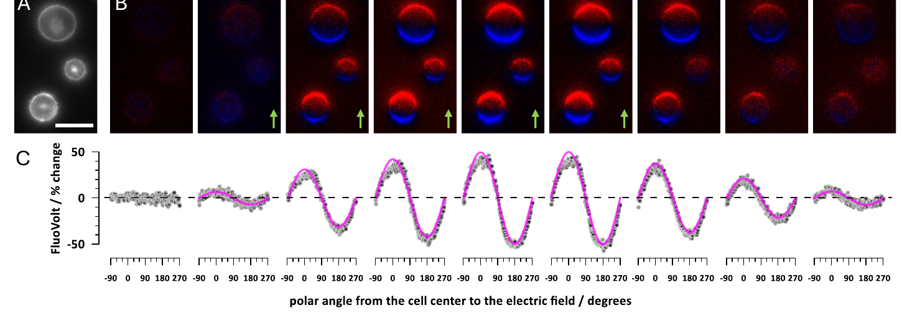
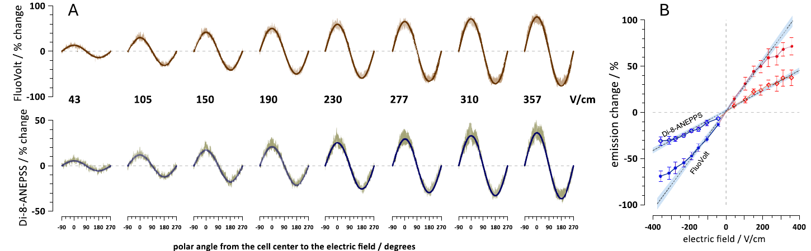
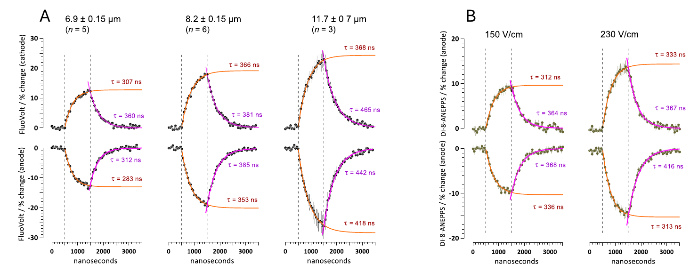
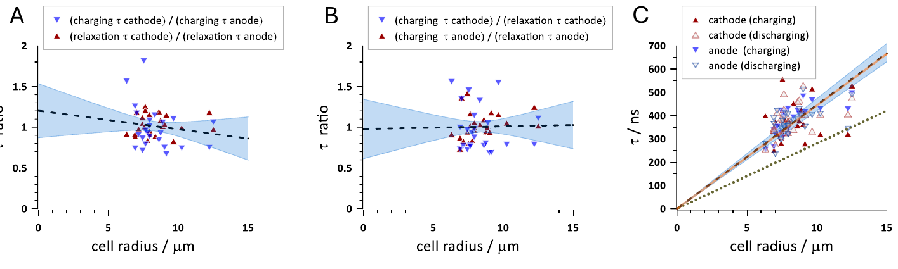
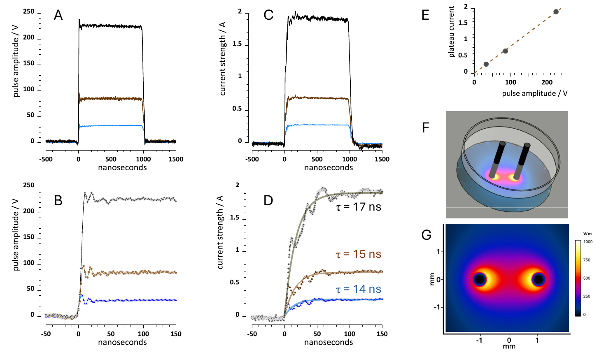

1. 论文信息
标题：Resolving nanosecond kinetics of the optical membrane potential in pulsed electric fields
作者：Iurii Semenov 等，通讯作者 Andrei G. Pakhomov
期刊：Bioelectrochemistry 168 (2026) 109143
DOI：10.1016/j.bioelechem.2025.109143
本地 PDF：打开本地 PDF
这篇文章的核心不是“普通膜电位记录”，而是用电位敏感染料和脉冲激光频闪成像，看 1 微秒电脉冲打开以后，细胞膜像电容一样在几百纳秒内充电、再放电恢复的过程。
2. 先把英文术语说明白
PEF：脉冲电场
很短的电脉冲，不是一直开的恒定电场。本文主要是 1 μs 脉冲。
CHO-K1 细胞
中国仓鼠卵巢细胞。它比较圆、兴奋性通道少，适合验证“球形细胞膜电容充电”模型。
VSD：电位敏感染料
膜电位变化时荧光也变化，用相机看荧光，间接看局部膜电位。
FluoVolt
一种电位敏感染料。灵敏度高，但强电场下容易接近饱和。
Di-8-ANEPPS
另一种电位敏感染料。灵敏度低一些，但线性范围更宽。
频闪成像
不是高速连拍，而是在指定时刻打一个 6 ns 激光闪光，重复多次拼出时间过程。
3. 刺激瞬间：细胞里面、膜上、膜外分别怎么变？
结论先说：外液先出现电位梯度，细胞内部短暂暴露在外电场中；随后细胞膜像电容一样充电，朝阴极的一侧去极化，朝阳极的一侧超极化；膜充满后，细胞内部被屏蔽，主要电压差集中在细胞膜上。
0 ns 左右
电脉冲刚打开。
细胞外培养液中立刻形成电位梯度。也就是说，细胞外面不是处处同电位，而是一边高、一边低。
刚开始几十 ns
细胞内部还没完全被膜屏蔽。
文章说，在电场刚打开的一瞬间，整个细胞体积都暴露在外电场里。此时细胞质内部也短暂感受到电场。
约 50-500 ns
细胞膜开始电容充电。
朝阴极一侧去极化，朝阳极一侧超极化，赤道附近变化最小。这个空间分布接近余弦形状。
接近 1 μs
膜电位接近稳定。
细胞内部逐渐变成近似等电位，内部电场接近 0；主要电压差集中在很薄的细胞膜上。
刺激结束后
膜放电恢复。
电脉冲结束以后，膜电位按指数过程回到刺激前状态。本文测到充电和放电恢复的时间常数基本相同。
用公式看，就是这个意思
ΔVm(t) = 1.5 · E · r · cosθ · (1 - e-t/τ)
这里 ΔVm 是外电场诱导出来的膜电位变化，E 是外电场强度，r 是细胞半径，θ 是膜上某个位置相对电场方向的角度，τ 是膜充电时间常数。
这个公式说了三件事：细胞越大，诱导膜电位越大；越靠近两极，变化越大；变化不是瞬间完成，而是按 τ 这个时间常数逐步充上去。
4. 这篇文章里的图怎么体现？





5. 和你的差分测量有什么关系？
| 问题 | 这篇文章怎么处理 | 对你有什么启发 |
|---|---|---|
| 外电场下膜电位怎么变？ | 用电位敏感染料看局部膜电位，能看到两侧一正一负的空间分布。 | 普通 patch clamp 很难直接看到这种周向分布，差分测量和光学验证是互补的。 |
| 测量链路会不会骗你？ | 先验证刺激电路、染料线性、空间余弦分布、时间常数。 | 和你做电容补偿/胞外伪迹扣除一样，先确认测量链路可靠，再解释生物效应。 |
| 细胞膜是否会被电穿孔？ | 本文主要在低场强、非强电穿孔条件下验证膜充电理论。 | 你的脑片常规刺激更需要担心记录伪迹和局部 Ve，通常不是先担心电穿孔。 |
注意：这篇文章直接测的是“膜上的光学信号”，不是直接测细胞里面每一点和细胞外每一点的电位。细胞内外电位怎么分布，是作者根据经典电磁/等效电路模型解释出来的。